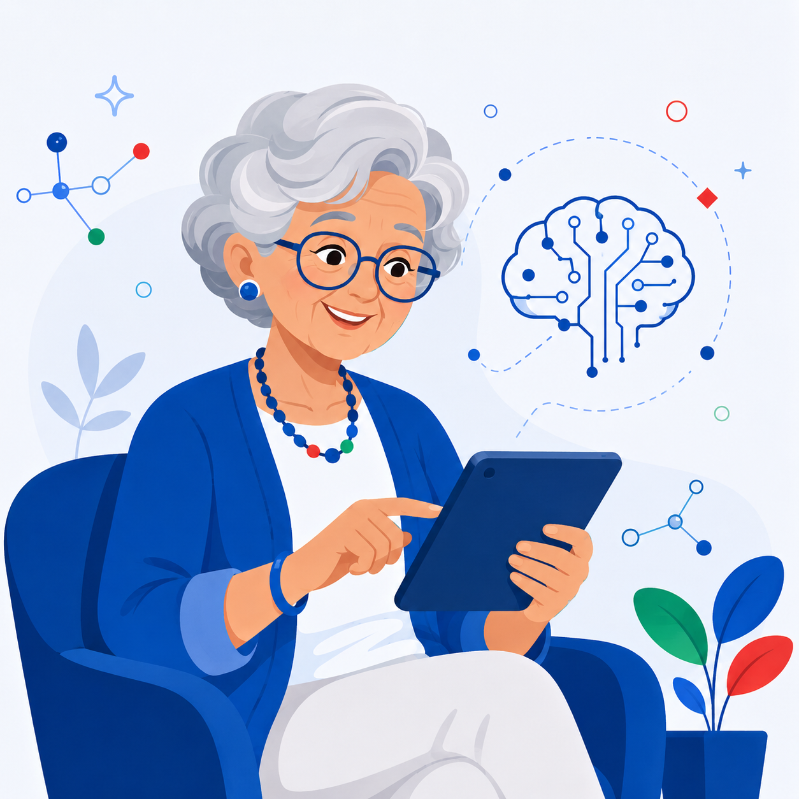
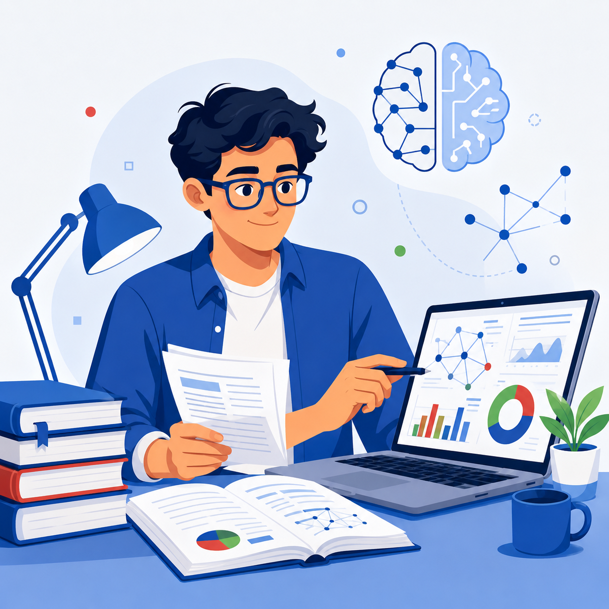

Personagens da Coleção
Personagens didáticos recorrentes que aproximam conceitos de situações reais de aprendizagem.

Maria
Participante iniciante que aprende IA para usar o celular, organizar a rotina, evitar golpes e melhorar a qualidade de vida.
Módulos: M1, M2, M9

João
Educador que usa IA para planejar aulas, criar materiais, elaborar atividades e orientar estudantes.
Módulos: M2, M3, M8
Carlos
Pequeno empresário que usa IA para atendimento, marketing, organização e análise de dados de negócio.
Módulos: M2, M3, M6

Ana
Servidora que usa IA para documentos, indicadores, atendimento ao cidadão e políticas públicas.
Módulos: M2, M7

Pedro
Estudante/pesquisador que usa IA para literatura, síntese de documentos, escrita e produção acadêmica.
Módulos: M4, M5, M10